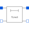

TLine3Lossless transmission line with characteristic impedance Z0 and frequency F |

|
Information
This information is part of the Modelica Standard Library maintained by the Modelica Association.
Lossless transmission line with characteristic impedance Z0 and frequency F The lossless transmission line TLine3 is a two Port. Both port branches consist of a resistor with value of the characteristic impedance Z0 and a controlled voltage source that takes into consideration the transmission delay. For further details see Branin's article below. Resistance R' and conductance C' per meter are assumed to be zero. The characteristic impedance Z0 can be derived from inductance and capacitance per length (L' resp. C'), i. e. Z0 = sqrt(L'/C'). The length of the line is equal to a quarter of the wavelength corresponding to the frequency F, i. e. the transmission delay is the quotient of 4 and F. In this case, the characteristic impedance is called natural impedance.
References:
- Branin Jr., F. H.
- Transient Analysis of Lossless Transmission Lines. Proceedings of the IEEE 55(1967), 2012 - 2013
- Hoefer, E. E. E.; Nielinger, H.
- SPICE : Analyseprogramm fuer elektronische Schaltungen. Springer-Verlag, Berlin, Heidelberg, New York, Tokyo, 1985.
Parameters (2)
| Z0 |
Value: Type: Resistance (Ω) Description: Natural impedance |
|---|---|
| F |
Value: Type: Frequency (Hz) Description: Frequency |
Connectors (4)
| p1 |
Type: PositivePin Description: Positive electrical pin of port 1 |
|
|---|---|---|
| n1 |
Type: NegativePin Description: Negative electrical pin of port 1 |
|
| p2 |
Type: PositivePin Description: Positive electrical pin of port 2 |
|
| n2 |
Type: NegativePin Description: Negative electrical pin of port 2 |